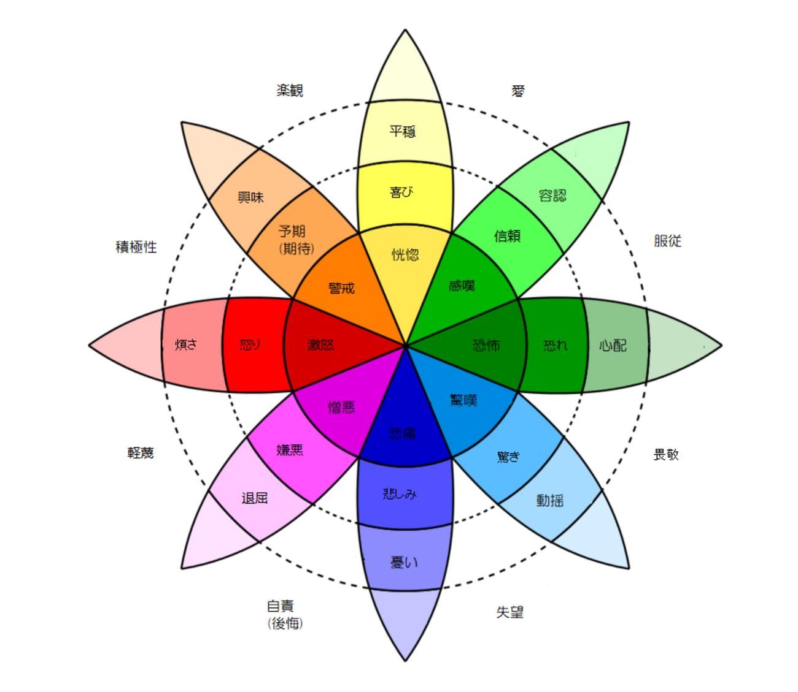

ポピュラー音楽の作曲技法には、メロディ・リズム・コード進行などの多様な要素がその印象や感情に関わっている。その中でも特にコード進行は、近年のヒット曲における楽曲の印象を決定づける大きな要因の一つである。しかし、ヒット曲のコード進行と歌詞の関係については研究がまだ少なく、検討の余地が残っていると考えられる。本研究では、ヒット曲における主要なコード進行を対象として、歌詞の感情分析結果を集計した結果を可視化する。本手法により、コード進行と歌詞の感情の関係に関する新たな知見が得られると期待される。
J-POP には「王道進行（IV→V→iii→vi）」「小室進行（vi→IV→V→I）」「丸サ進行（IVM7→III7→vi7→I7）」など、頻繁に使用される定番のコード進行パターンが存在する。これらのコード進行は、楽曲に特定の感情的印象（感動的、力強い、おしゃれなど）を与えることが経験的に知られている。
一方、歌詞は楽曲の感情表現において重要な役割を果たしており、コード進行と歌詞がどのように組み合わされているかは、楽曲の全体的な印象に大きく影響する。しかし、コード進行パターンと歌詞の感情表現の関係を定量的に分析した研究は少ない。
本研究では、可視化により以下のことを明らかにする：
本システムでは、J-Total Music と U-FRET の 2 つのコード譜サイトから楽曲データを収集し、Spotify Web API でメタ情報を付与している。
| ソース | 取得データ | 収集方法 |
|---|---|---|
| J-Total Music | コード進行（原曲キー付き） | Web スクレイピング（静的 HTML） |
| U-FRET | コード進行 + 歌詞（セクション区切り） | Playwright（動的レンダリング） |
| Spotify Web API | リリース日、人気度、アルバム情報 | API 検索 |
キー推定およびセクションごとの歌詞との対応関係を考慮、メタ情報によるフィルタリングを実現するため、J-Total Music と U-FRET の両方に存在し、Spotify Web API で取得できる楽曲のみを採用している。
異なるキーの楽曲間でコード進行を比較可能にするため、すべてのコード進行を Cmaj / Amに移調している。
同じ「王道進行」でも、キーが異なると表記が変わる：
| キー | 王道進行の実際のコード |
|---|---|
| C | F → G → Em → Am |
| G | C → D → Bm → Em |
| D | G → A → F#m → Bm |
すべてのコード進行を Cmaj または Am に移調することで、キーに依存しない比較が可能になる。
隠れマルコフモデル（HMM）は「観測できるもの」から「隠れた状態」を推定するモデルである。
| 要素 | 本システムでの対応 |
|---|---|
| 隠れた状態 | 真のキー（C, Cm, D, Dm, ... 24種類） |
| 観測データ | コード進行（Am, F, G, C, ...） |
| 放出確率 | あるキーのときに、あるコードが出現する確率 |
| 遷移確率 | あるキーから別のキーに変化する確率 |
楽曲全体を一度に分析するのではなく、ウィンドウ（窓）を移動させながら分析する。各ウィンドウで機械学習モデルが「このコード列は何のキーか？」を 24 クラスの確率として出力する。
| パラメータ | 値 | 意味 |
|---|---|---|
| W（ウィンドウサイズ） | 16 | 16 コード ≒ 4〜8 小節分。キー判定に十分な情報量 |
| H（ステップサイズ） | 4 | 4 コード ≒ 1〜2 小節。細かすぎず粗すぎない粒度 |
| switch_penalty | 4.0 | log 確率で 4.0 ≒ 確率比で約 55 倍の差が必要 |
Viterbi アルゴリズムは、HMM において最も確からしい状態の系列を求める動的計画法である。キーを変える場合にペナルティを課すことで、確率が少し高いだけでは転調と判定されず、連続して別のキーの確率が高い場合のみ転調と判定される。
「このコード進行は何のキーか」を判定する分類器として、ロジスティック回帰を使用している。
特徴量の設計:
| 特徴量 | 長所 | 短所 |
|---|---|---|
| Bag-of-Words（コードの出現頻度） | コードの種類（Am, Dm7 等）を区別できる | 高次元になりがち |
| ルート音の 12 次元ヒストグラム | 低次元で安定 | コードの種類（メジャー/マイナー）を無視 |
両方を組み合わせることで、コードの種類とルート音の両方の情報を活用できる。学習データとして J-Total Music の原曲キー情報を使用し、24 クラスの確率分布を出力する。
歌詞の感情分析には、日本語感情分析用にファインチューニングされた BERT
モデル（koshin2001/Japanese-to-emotions）を使用している。プルチック（Plutchik）の
8
つの基本感情（喜び、悲しみ、期待、驚き、怒り、恐れ、嫌悪、信頼）に分類する。

| 感情 | 色づけ |
|---|---|
| JOY（喜び） | #FFFF73（黄色） |
| SADNESS（悲しみ） | #5150F8（青） |
| ANTICIPATION（期待） | #F3AB63（オレンジ） |
| SURPRISE（驚き） | #74BBF9（水色） |
| ANGER（怒り） | #E93323（赤） |
| FEAR（恐れ） | #429429（緑） |
| DISGUST（嫌悪） | #EB60F8（紫） |
| TRUST（信頼） | #88FC6E（黄緑） |
コード進行の類似度を測るため、音楽的レーベンシュタイン距離を使用している。これは通常の編集距離（レーベンシュタイン距離）を音楽理論に基づいて拡張したものである。
音楽理論では、コードは機能（Function）によって分類される：
| 機能 | 役割 | 該当コード |
|---|---|---|
| T（Tonic） | 安定・解決 | I, iii, vi |
| PD（Predominant） | ドミナントへ導く | ii, IV |
| D（Dominant） | 緊張・解決を促す | V, vii°, V7 |
この分類を基に、置換コストを以下のように設計した：
| 置換パターン | コスト | 根拠 |
|---|---|---|
| 完全一致（I → I） | 0.0 | 同一コード |
| 同機能（I → vi） | 0.2 | 代理コード関係（音楽的に互換性が高い） |
| 隣接機能（T → PD, PD → D） | 0.5 | 自然な和声進行の流れ |
| 遠い機能（T → D） | 0.8 | 対照的な機能（トニックとドミナントは対極） |
| 機能不明 | 1.0 | 特殊コード |
| パターン | コスト | 根拠 |
|---|---|---|
| 繰り返し（前と同じコード） | 0.5 | 装飾的・強調のための繰り返しは低コスト |
| 構造的欠落 | 0.7 | 進行の骨格に影響するため中程度のコスト |
コード進行は循環的に演奏されることが多いため、全回転（ローテーション）を試して最小距離を採用する。
例: 王道進行 IV-V-iii-vi の全回転 - IV-V-iii-vi（開始位置0） - V-iii-vi-IV（開始位置1） - iii-vi-IV-V（開始位置2） - vi-IV-V-iii（開始位置3） 比較対象との距離を全パターンで計算し、最小値を採用
テンションコード（9th, 11th, 13th, sus, add など）は基本コードに不協和音を追加し、音の複雑性を変化させる。本システムでは、テンションも距離計算に考慮している。
| テンション | 不協和度 | 例 |
|---|---|---|
| なし（トライアド） | 0 | IV, V, vi |
| 7th（M7, m7, 7） | 1 | IVM7, V7, vim7 |
| sus（sus2, sus4） | 1 | Vsus4 |
| add（add9, add11） | 1.5 | IVadd9 |
| aug / dim | 1.5 | IVaug, viidim |
| 9th | 2 | V9 |
| 11th | 2.5 | IV11 |
| 13th | 3 | V13 |
テンションによる追加コスト:
| パターン | 追加コスト | 例 |
|---|---|---|
| 同じテンション | 0.0 | IVM7 vs IVM7 |
| テンションあり vs なし | 0.05〜0.15 | IV vs IVM7 |
| 異なるテンション | 0.03〜0.1 | IVM7 vs IV9 |
| 項目 | 通常のレーベンシュタイン距離 | 本研究の音楽的距離 |
|---|---|---|
| 置換コスト | 常に 1.0 | コードの機能的類似性に基づく（0.0〜1.0） |
| 挿入コスト | 常に 1.0 | 繰り返しパターンかどうかで変動（0.5〜0.7） |
| 削除コスト | 常に 1.0 | 繰り返しパターンかどうかで変動（0.5〜0.7） |
| 循環性 | 考慮なし | 全回転を試して最小距離を採用 |
| テンションコード | 考慮なし | 不協和度に応じた追加コスト（0.0〜0.15） |
なぜこの手法を採用したか:
高次元の距離データを 2 次元平面に射影するため、MDS、UMAP、t-SNE の 3 手法を実装している。
| 手法 | 特徴 | 適した分析目的 |
|---|---|---|
| MDS | 大域的な距離関係を保持 | 基準進行との距離を正確に把握 |
| UMAP | 局所・大域のバランス、高速 | 類似コード進行のグループを発見 |
| t-SNE | 局所構造を強調、クラスタが明確分離 | 未知のパターン・外れ値を発見 |
各コード進行を 2 次元平面上の点として配置し、その点に歌詞から抽出した感情分布を円グラフとして表示するインタラクティブな Web アプリケーションを開発している。
機能:
本システムにより、以下の分析が可能となる：